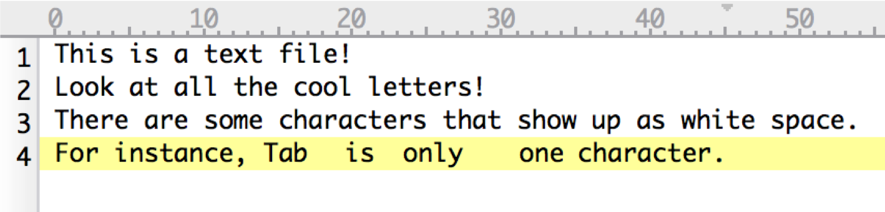
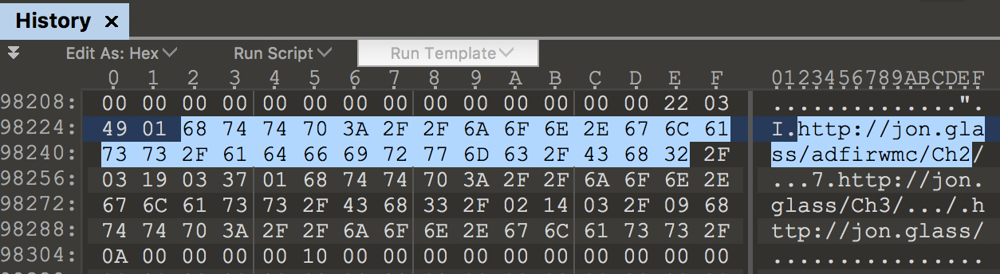

ADFIRWMC - 4. The Value of Unstructured Analysis
I find performing unstructured analysis upfront to be critical part of my work flow because it tells me massive amount of contextual data upfront and it focuses the structured analysis I need to accomplish.
When I say unstructed analysis, I am referring mostly to searching through the strings inside of the artifacts I have collected for keyword matches. Where do these keywords come from? Unless you are on a complete witch hunt, which unfortunately happens, there is a set of circumstances that led you to investigate this system. It could be an alert from weird proxy traffic or an antivirus hit on a file found in a User’s Temp folder.
Whatever it is, these events typically have fun details that you can search for. (90% of the time it ends up being some part of a file path or part of a URL.) Let’s look at a little bit of science before we get into DFIRness of it all. This topic can get hopeless deep and veer of course quickly so I am only covering the meat and potatoes.
Tools Used
Strings
A string is a data type used in programming, such as an integer and floating point unit, but is used to represent text rather than numbers. Most of the words you read on a computer are stored as a string on disk or in memory. For instance, by visiting this site, your browser has probably stored a cached version of this page to a temp folder somewhere in your profile. On top of that, your browser also needs this page’s content in its process memory in order to render it. Strings get thrown all over the place by doing even the most mundane tasks. Knowing the significance of where strings are found can make your life a lot easier.
ASCII
- Stands for American Standard Code for Information Interchange but you will never need to know that.
- Even though ASCII predates epoch and maybe even time itself, it is the basis for most modern character-encoding schemes.
- Ascii is a code for representing English characters as numbers, with each letter assigned a number from 0 to 127
- Not all ASCII characters are visible text.
- Some are used to control how text is displayed like 0x0A New Line or 0x09 Tab.
- Some are strictly for commands like Escape 0x1B or Delete 0x7F.
- Reference: https://www.asciitable.com/
Example:

Example displayed:

Fun ASCII DFIR stuff you might find:
- Browser History, Cookies, etc. are stored in ASCII in Chrome, FireFox (Probably others too.) 
- File Paths in Shortcuts
- Antivirus Logs
Unicode
- Like ASCII but bigger
- Unicode is a standard which defines the internal text coding system in almost all operating systems used in computers at present.
- Version 1 started out with 65536 code points, commonly encoded in 16 bits or 2 bytes.
- The current version is 6.3, using 110,187 of the available 1.1 million code points.
Example:
Example Displayed:

Fun Unicode DFIR stuff you might find:
- Names of Files and Folders in $MFT, $LogFile, $UsnJrnl
- Stuff in Windows Event Logs
- Stuff in Windows Registry Keys
- File Paths in Recycle Bin metadata files
- File Paths in Shortcuts
- Sticky Notes left on the Desktop
- Literally almost anything with text.
Why Do You Care?
Imagine you are a salty beat cop 4 days from retirement. Just do it. No, really.
You get a call on a tip line saying an elaborate bank heist could have been committed. The caller says the they normally use a specific kind of fake id, knock out the guards with a tranq gun, put a bunch of money in a blue bag, and fly off the roof of the bank in a fancy helicopter. While not perfect, unstructured analysis can provide the following details immediately:
- Has there been a fake ID in the bank?
- No? The crooks either haven’t struck or got lost on the way. It happens.
- Yes? The crooks have been here!
- Has there been a tranq gun in the bank?
- No? The guards must have spotted the fake ID and disabled the crooks before they got the gun out. NICE!
- Yes? Well crap. The guards may or may not have had to deal with tranq darts. Gettting serious now…
- Was there a blue bag full of money in the bank?
- No? Guards took out the crooks or the crooks were looking for Rubles instead of Dollars and just left.
- Yes? Well then we can assume that the guards are subdued and the crooks are running around in the bank unchecked.
- Has anyone seen a fancy helicopter recently?
- No? Helicopter might have been ceased or ran out of gas. Happens all the time.
- Yes? Well…you have been successfully robbed. Time to start dusting for prints…
Real World Example
Here is an interesting “crook” I found on Hybrid Analysis. This sample has been linked to APT33 and drops the TURNEDUP backdoor. For funsies, I 7zipped it up, named it “Paul_resume.7z” and sent it to myself in an email to simulate how these things go down.
High level things we can look for from this sample as discovered from our detection team and/or OSINT:
- Filenames
- stikynote.exe, codexgigas_f09bb42e6c39a9714ed8a4d4191cf19e40d1919b.exe, Paul_resume.7z
- URLs
- googlmail.net
THIS IS A JOB FOR POWERSHELL!!!
start-process C:\Tools\strings.exe -ArgumentList "-nobanner -accepteula -s 2018-03-18-10-16-4\*" -RedirectStandardOutput ..\strings.txt
gc .\strings.txt| Where-Object { $_ -imatch "Paul_resume|codexgigas|stikynote" } | sort | unique
###Example:
This output speaks so much about what has transpired on this machine that I don’t need to wait for structured analysis to make a containment decision. Here are the highlights that I can see in roughly 30 secs:
- The $MFT, $LogFile, and $USNJrnl:$J show evidence of the download attempt, successful download of the zip file, unzipping, and execution:
- Download Attempt:
C:\Scripts\2018-03-18-10-16-4\c\$Extend\$USNJrnl$J: <<Paul_Resume.7z.2hvceui.partial- The suffix .parital is affixed to files that are in the process of being downloaded by IE and Edge.
- Successful Download:
C:\Scripts\2018-03-18-10-16-4\c\$Extend\$USNJrnl$J: <Paul_Resume.7z- Here we see just the Paul_Resume.7z meaning it finished downloading
- Unzipping
C:\Scripts\2018-03-18-10-16-4\c\$Extend\$USNJrnl$J: $<Paul_Resume.7z.lnk- I don’t know the exact filepath of this Shortcut file but the majority of shortcuts are created for recently accessed files.
C:\Scripts\2018-03-18-10-16-4\c\$Extend\$USNJrnl$J: r<codexgigas_f09bb42e6c39a9714ed8a4d4191cf19e40d1919b-1.exe- Since this is the file inside the 7z file, we can see that it was successfully unzipped.
C:\Scripts\2018-03-18-10-16-4\c\Users\Username\NTUSER.DAT: C:\Users\Username\Desktop\Paul_Resume\codexgigas_f09bb42e6c39a9714ed8a4d4191cf19e40d1919b-1.exe- This line from the NTUSER.DAT file of from the Username profile clearly shows this was extracted to the users desktop. What stored this string in the user’s registry? Right now…it doesn’t matter. We are not parsing anything. Only triaging.
- Execution:
C:\Scripts\2018-03-18-10-16-4\c\$Extend\$USNJrnl$J: R<CODEXGIGAS_F09BB42E6C39A9714E-F57CC974.pf- Files ending in .pf are typically associated with Windows Prefetch. This is a file that is autmagically generated when you run an execuatable to make a Windows machine more efficient. This is strong evidence of execution. We will dig into Prefetch later in this course.
- This machine does not have StikyNotes install from Microsoft so references to StikyNote.exe, StikyNote.tmp, and STIKYNOTE.EXE-EC3D9C6B.pf seen in $UsnJrnl:$J, $LogFile, and $MFT tell us that the TURNEDUP backdoor was successfully ran on this machine.
- Download Attempt:
- Persistence:
- This was less science and more eductated guesswork but it is rare to see a complete file path in a registry value unless it is going to be used to execute something Windows wouldn’t naturally know where to find ergo… persistence. A quick peek with Eric Zimmerman’s Registry Explorer revealed my hunch was right.
Registry file: C:\Scripts\2018-03-18-10-16-4\c\Users\Username\NTUSER.DAT Key: Software\Microsoft\Windows\CurrentVersion\Run Last write: 2018-03-18 17:03:14 Value: RESTART_STICKY_NOTESS (RegSz) Data: C:\Users\Username\AppData\Local\Temp\StikyNote.exe- Good ol’ HKCU\Software\Microsoft\Windows\CurrentVersion\Run is one of the easiest methods of making sure an executable starts when a user logs in. Makes for a good IoC to test the rest of your environment against.
We have found all the evidence we need to determine that this machine needs to be removed from the network and further analysis needs be taken to determine what took place after infection. While fairly typical, this example does not represent all malware or reasons you might need to DFIR a system so your milage may vary BUT I found performing this step first almost always helps eliminate or focus structured analysis.
Still not a believer? I wrote up a similar case a while ago that saved my buns before the holidays.